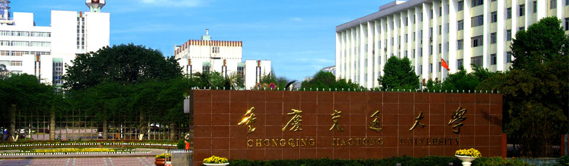

家乡

介绍
重庆，简称“渝”，别称山城，是中华人民共和国省级行政区、直辖市、国家中心城市、超大城市 ，国务院批复确定的国家重要的中心城市之一、长江上游地区经济中心 、国家重要先进制造业中心、西部金融中心、西部国际综合交通枢纽和国际门户枢纽 。地处中国内陆西南部，介于东经105°11'—110°11'、北纬28°10'—32°13'，是长江上游地区的经济、金融、科创、航运和商贸物流中心，国家物流枢纽，西部大开发重要的战略支点、“一带一路”和长江经济带重要联结点及内陆开放高地、山清水秀美丽之地 ；既以江城、雾都、桥都著称，又以山城扬名 。截至2021年底，下辖26个区、8个县、4个自治县 ，总面积8.24万平方千米 ，常住人口3212.43万人 。
重庆是国家历史文化名城。1189年，宋光宗赵惇先封恭王再即帝位，升恭州为重庆府，重庆由此得名。重庆是“红岩精神”起源地，巴渝文化发祥地，“火锅”、“吊脚楼”等影响深远 。重庆有洪崖洞、长江三峡、世界遗产大足石刻、武隆喀斯特等景观。重庆作为西南地区最大的工商业城市 ，工业互联网标识解析国家顶级节点 ，截至2021年底，建有中科院重庆科学中心、北京大学重庆大数据研究院等科研平台104所，在渝高校69所 ，中国（重庆）自由贸易试验区、中新（重庆）战略性互联互通示范项目、两江新区、西部陆海新通道等战略项目 。
家乡美景
美景一
美景二
美景三
美景四